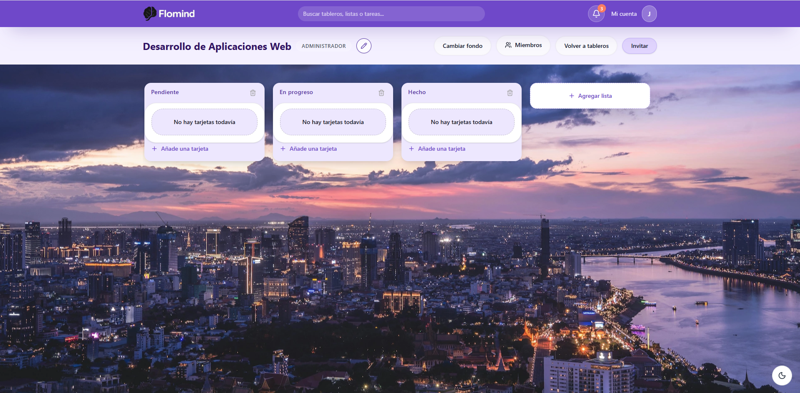

Proyectos Destacados

Tras 3 años liderando equipos y gestionando operaciones comerciales, decidí transformar mi pasión por la tecnología en mi profesión. Mi experiencia previa me ha dotado de una capacidad crítica para entender qué necesita un negocio y cómo traducirlo en soluciones técnicas eficientes.
Como Full Stack Developer, no solo escribo código; diseño herramientas pensando en la experiencia del usuario y en la escalabilidad del sistema. Mi enfoque combina la robustez de Java/Spring Boot con la agilidad de React.
Zaitec
LIDL
LIDL
MEDAC
Gestión de Ventas y Espacios Comerciales
Bachillerato